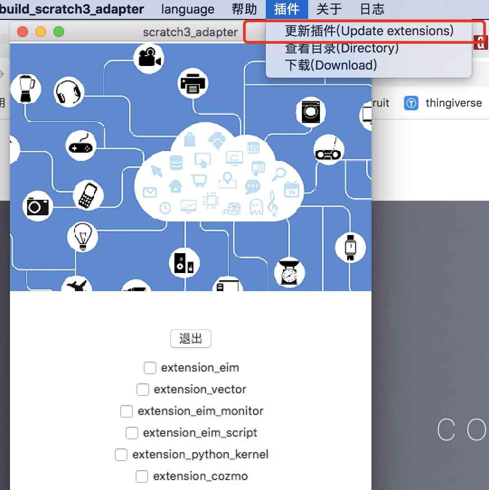
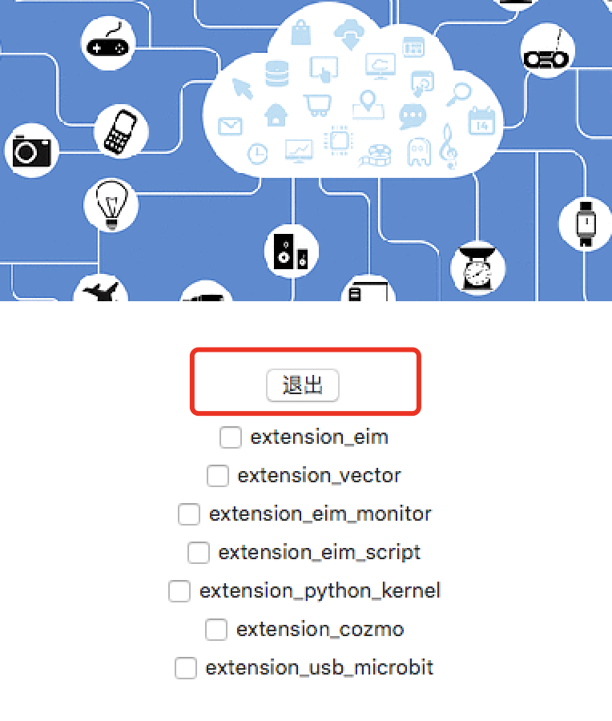

安装(install)
codelab-adapter目前发布了Mac、Windows(支持window7及以上版本)、Ubuntu、Raspbian(树莓派)的客户端
下载(最新版本:v0_8_2)
你可以免费下载 (点击对应的操作系统链接):
- Mac OS(64bit)
- macOS 10.13.5+
- 如果你点击应用闪退，请参考 :打开来自身份不明开发者的应用
- Windows(Windows7及以上）
- Windows: windows7、windows10已测试(32位和64位都可用)
- linux
- Ubuntu(16.04及以上版本)(64bit)
- Raspbian
- 下载，解压，赋予运行权限:
chmod +x v0_8_1_codelab_adapter_raspbian
- 下载，解压，赋予运行权限:
更新
如果你之前使用过旧版本的软件，更新到新版本后，建议也更新一下插件目录(~/codelab_adapter/extensions/)

旧的插件会被备份到同级目录(如extensions_1540437691)
兼容性
目前,Windows和Mac的版本测试过的机器比较多。
Ubuntu测试了16.04及18.04, Ubuntu(16.04及以上版本)也可用于Arch linux，如果你在使用其他linux发行版，也可以试试。
Raspbian我们只测试了Stretch版本,如果有系统兼容性问题，欢迎联系我们
ps: MacOS10.14下，按钮无法显示文字, 但不影响正常使用 (按钮文字 可以参考下图)
